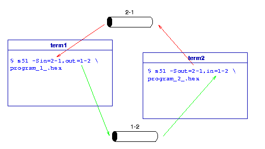

Using serial interfaces
Connecting a terminal
You can easily connect a terminal to the serial interface of the
simulated microcontroller. This terminal is just a file so it can be
anything which is represented as a file. It can be a real serial line
of the computer:
$ s51 -s/dev/ttyS1
Of course you must use the actual device name of your operating
system. Device name ttyS1 above is used in Linux
systems. Your system can use other names.
You can use a terminal of your system. It can be a virtual console
if your system provides such as Linux does for example. On X Windows
you can use xterm windows as terminals, one for running the
simulator and one as a terminal on CPU's serial line. Here is a sample
how to do this:
- Prepare the terminal window which will be connected to the
serial line:
- Check the device name which represents the terminal:
$ tty
/dev/ttyp1
- Disconnect the shell from the terminal. Usualy I use the
tail command and any existing text file:
$ tail -f $HOME/.profile
- Run the simulator in the other window:
$ s51 -s/dev/ttyp1 program.hex
Use the output of the tty command above as the parameter of the
-s option.
Every character sent out by the simulated program
appears in the "terminal" window and every charater you type in there
will be received by the simulated controller's serial line.
Connecting two instances of simulator
Executing two instances of the simulator, serial lines of two
simulators (micros) can be connected together so they can talk to
each other over their serial interface. It is because you can specify
separate files for serial input and output. For example you run two
simulators "1" and "2", here is the sample how to connect them:

- Make two FIFOs to represent physical wires in serial cable
connecting two micros:
$ mkfifo 1-2 2-1 # 1-2: 1->2 and 2-1: 2->1
- Start two simulators and specify the FIFOs as input and output of
serial interface:
term1 $ # start sim "1"
term1 $ s51 -Sin=2-1,out=1-2 program_1_.hex
term2 $ # start sim "2"
term2 $ s51 -Sout=2-1,in=1-2 program_2_.hex
Because opening a pipe blocks the program until other direction is
opened, the order of arguments above is important!
- Debug programs as usual.
Using the most usefull unix commands cat and tee and
just some more FIFOs you can monitor serial communication, here is a
sample:

- Make some FIFOs to use between simulators and tee "monitors":
$ mkfifo 1_tee tee_2 2_tee tee_2
- Run monitoring programs (in two xterms for example):
xterm1 $ cat 1_tee|tee /dev/tty >tee_2 # monitor 1->2
xterm2 $ cat 2_tee|tee /dev/tty >tee_1 # monitor 2->1
- Now you can start simulators (on two other terminals:)
xterm3 $ s51 -Sin=tee_1,out=1_tee program_1_.hex
xterm4 $ s51 -Sin=tee_2,out=2_tee program_2_.hex
- Start your apps and listen what they are talking about.